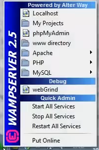

Hva er WAMP?
WAMP står for Windows Apache MySQL PHP og er altså bare en fellesbetegnelse på når disse teknologiene kjøres sammen.
Hordan installere Wamp?
For å installere Wamp på din maskin, må du vite om din maskin er 64-bit eller 32-bit.
Etter dette må du installere Microsoft VC++ Packages som du kan finne
Her
Her finner du også wampserver klienten som du trenger for å installere selve wamp.
Etter du har lastet ned wamp klienten må du følge installeringsprosedyren
Etter du har installert wamp blir du bedt om å velge standard nettleser og textbehandler
Her kan du velge hva du vil og du finner programmene på lokal disken din
Etter du har installert wamp og åpnet det, får du en logo i høyre hjørne og denne kan du trykke på for å åpne denne menyen

Klikk på phpMyAdmin og skriv inn ønsket brukernavn. Eksempel "root" som brukernavn og ikke et passord
Etter dette trykker du på database og skriv inn et databasenavn og trykk på create. Denne kan du kalle f.eks wordpress
Da er wamp installert, da er du klar for å installere wordpress